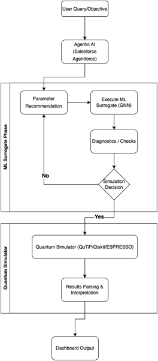

AI-Assisted Quantum Simulation & Modelling using Agentic AI
"Hypothesis/Project Statement: Quantum simulation is complex, resource-intensive, and lacks intelligent automation, limiting accessibility and efficiency. This project aims to build an AI-powered system that simplifies workflows, reduces cost, and accelerates quantum discovery."
Problem Statement
Quantum simulation remains complex, resource-intensive, and inaccessible to many due to the lack of automated parameter selection, real-time diagnostics, fast ML-based prediction, and user-centered guidance, resulting in inefficient workflows and limited exploration. There is a critical need for an integrated AI-powered system that streamlines simulation processes, reduces computational cost, democratizes access, and accelerates scientific discovery in quantum mechanics.
Literature Review / Market Research
- Classical computational physics methods (tensor networks, configuration interaction, numerical solvers) remain accurate but computationally intensive.
- ML-based surrogate models — especially Graph Neural Networks — significantly accelerate quantum property prediction and materials discovery.
- Agentic AI and LLM-based systems are introducing workflow automation, conversational interfaces, and intelligent assistance in scientific computing.
- However, most solutions operate independently: simulators focus on computation speed, while AI agents focus on interaction — lacking deep integration.
Research Gap / Innovation
- No fully integrated AI-driven quantum simulation ecosystem currently exists.
- Current workflows are fragmented, require manual parameter tuning, and demand high expertise.
- Surrogate models accelerate prediction, but lack intelligent orchestration.
- AI agents assist interaction, but are not tightly coupled with physics-based simulation engines.
- Our system unifies ML surrogate modeling, automated diagnostics, and AI-agent orchestration into a single intelligent workflow.
System Methodology
Dataset / Input
QM9 is a benchmark quantum chemistry dataset containing ~134,000 small organic molecules
(composed of C, H, O, N, F) with up to 9 heavy atoms.
The molecules are generated from the GDB-17 database and their geometric, energetic,
electronic, and thermodynamic properties are computed using Density Functional Theory (B3LYP/6-31G(2df,p)).
Each molecule includes:
- 3D atomic coordinates
- Atom types and connectivity
- Total energy, HOMO/LUMO energies
- Dipole moment, polarizability
- Heat capacity, enthalpy, free energy
Preprocessing: Molecular graphs are constructed with atoms as nodes and bonds as edges. Node features include atomic number and charge; edge features include bond type and distance. Data is normalized and split into training/validation/test sets for GNN-based surrogate modeling.
Model / Architecture
End-to-End Project Workflow
Live Execution
View Project CodeResults & Analysis

The test run demonstrates stable two-level quantum system evolution under the implemented simulation framework. The AI-assisted workflow enables structured execution, automated parameter handling, and consistent system behavior validation.
Academic Credits
Project Guide
Dr. Ankit Shrivastava
Team Member 1
Shriya Desai
2427030171